|
JustKernels
1.0
XPACC Multiphysics simluation application
|


|
|
JustKernels
1.0
XPACC Multiphysics simluation application
|
|
This document summarizes the WENO scheme implementation in PlasCom2.
The fifth-order finite difference WENO scheme of Jiang and Shu [2] with modifications for the freestream preservation on curvilinear grids [8] are considered. A reduced-order platform is applied to reduce the order of the scheme close to the boundaries and the characteristic wave relations are used for the points on the boundary to implement different boundaries, such as inflow, outflow, no-slip adiabatic and slip isothermal walls.
Euler equations in the computational space in the vector form are considered
![\[ \begin{equation*} \frac{\partial \hat{\mathbf{Q}}}{\partial t}+\frac{\partial \hat{\mathbf{E}}}{\partial \xi}+\frac{\partial \hat{\mathbf{F}}}{\partial \eta}+\frac{\partial \hat{\mathbf{G}}}{\partial \zeta}=\hat{\mathbf{S_V}}, \end{equation*} \]](form_107.png)
where
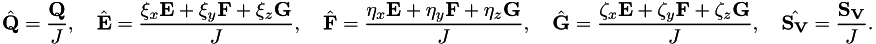
In this formulation, the Cartesian coordinates are mapped to a time-dependent coordinate system 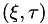, and 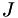 is the Jacobian of the transformation. 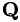 is the vector of conserved variables, 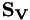 is the source term, and  , 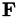, and are the flux vectors in the 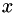, 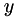, and 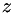 directions, respectively.
, 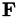, and are the flux vectors in the 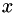, 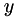, and 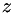 directions, respectively.
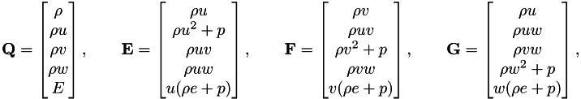
where 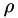 is density, ,  , and 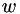 are the velocities,
, and 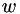 are the velocities,  is the pressure, is the internal energy, and 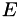 is the total energy.
is the pressure, is the internal energy, and 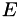 is the total energy.
For a finite difference scheme, the flux derivative is
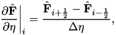
and the goal is to calculate the fluxes at cell edges, while the conserved variables are stored at the center of each cell. The WENO procedure to obtain the numerical flux 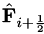 is [2] [4] [1] : Compute the physical flux at each grid point:
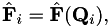
At each 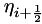, compute the left and right eigenvectors based on the Roe average between 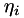 and .
Project the flux vector and the vector of conserved variables into the characteristic space:
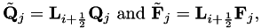
for all points in the numerical stencil associated with , i.e, 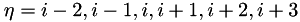. Perform a Lax-Friedrichs flux vector splitting for each component of the characteristic variables. Specifically, assume that the 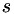th component of 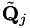 and 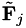 are 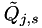 and , respectively, then compute
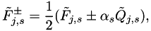
where
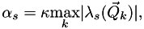
is the maximal wave speed of the th component of the characteristic variables over 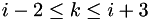, and is the th eigenvalue in the diagonal matrix 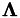, and 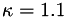 [2].
Perform a WENO reconstruction on each of the computed flux components 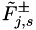 to obtain the corresponding component of the numerical flux. If we let 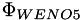 denote the fifth-order WENO reconstruction operator, then the flux is computed as follows:
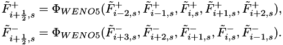
Then set
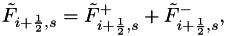
where 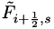 is the th component of . Finally, project the numerical flux back to the conserved variables
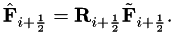
We consider the problem on a uniform grid with 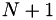 grid points,
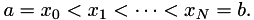
We would like to reconstruct at 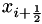 by WENO reconstruction on the stencil  . There are three sub-stencils for node 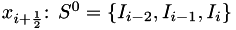, 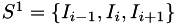 and . In each sub-stencil 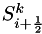, the third-order accurate numerical flux 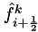 is given by
. There are three sub-stencils for node 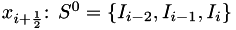, 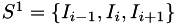 and . In each sub-stencil 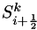, the third-order accurate numerical flux 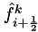 is given by
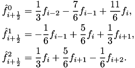
The numerical approximation 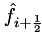 is defined as a linear convex combination of the above three approximations:
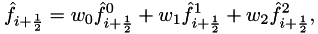
where the nonlinaer weights are defined as
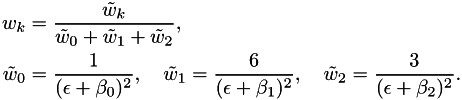
We take 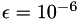 and the smoothness indicator parameters, 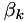, are chosen as in [2]
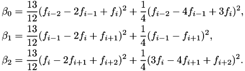
From these we define the fifth-order WENO reconstruction operator as follows:
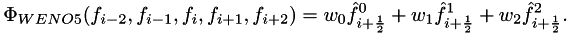
For freestream preservation on curvilinear grids, steps 5 and 6 in the WENO procedure are modified following [8]. The WENO flux is devided to a central and a dissipation part [3]
where
corresponds to a -order central finite difference scheme. The dissipation part becomes
where is the corresponding right eigenvector, and
![\[ \begin{align*} F_m'^{+1}= f_{j+1,m}^{+}-3 f_{j,m}^{+}+3 f_{j-1,m}^{+}-f_{j-2,m}^{+},\\ F_m'^{+2}= f_{j+2,m}^{+}-3 f_{j+1,m}^{+}+3 f_{j,m}^{+}-f_{j-1,m}^{+},\\ F_m'^{+3}= f_{j+3,m}^{+}-3 f_{j+2,m}^{+}+3 f_{j+1,m}^{+}-f_{j,m}^{+},\\ F_m'^{-1}= f_{j+3,m}^{-}-3 f_{j+2,m}^{-}+3 f_{j+1,m}^{+}-f_{j,m}^{-},\\ F_m'^{-2}= f_{j+2,m}^{-}-3 f_{j+1,m}^{-}+3 f_{j,m}^{+}-f_{j-1,m}^{-},\\ F_m'^{-3}= f_{j+1,m}^{-}-3 f_{j,m}^{-}+3 f_{j-1,m}^{-}-f_{j-2,m}^{-}. \end{align*} \]](form_173.png)
In this formulation
![\[ \begin{equation*} f^{\pm}_{k,m}=\frac{l_m}{2}\left[\left(\frac{\xi_x}{J}\right)_{j+1/2} \mathbf{E}_k +\left(\frac{\xi_y}{J}\right)_{j+1/2} \mathbf{F}_k +\left(\frac{\xi_z}{J}\right)_{j+1/2} \mathbf{G}_k +\pm \lambda_m \frac{\mathbf{Q}_k}{J_{i+1/2}} \right], \end{equation*} \]](form_174.png)
where is the corresponding right eigenvector. For freestream preservation, the metric term for evaluation the dissipation part of the flux is defined as [3]
For points on the boundary, we may use the characteristic wave relations to obtain the flux at that point.
Equations in the characteristic space are [5]
where
and
Also note that
Characteristic variables are
where
and
Wave speeds are
Use one-sided finite differences to calculate
Evaluate the $L$ vector
Evaluate based on the applied boundary condition
Come back to the computational space from the characteristic space:
Subsonic inflow:
solves for
where is the normal vector at the boundary. sets
Supersonic inflow:
sets everything
Outflow no-reflection: solves for all variables
doesn't set any variables
Adiabatic slip wall: Solves for everything
sets velocity , enforces the normal velocity to be
Isothermal no-slip wall:
solves for
sets velocity
sets
Two-dimensional single-fluid:
![\[ \begin{equation*} R= \begin{bmatrix} 1 & 0 & \frac{\rho}{2c} & \frac{\rho}{2c}\\ u & \rho \tilde{\xi_y} & \frac{\rho}{2c} \left(u+c \tilde{\xi_x}\right) & \frac{\rho}{2c} \left(u-c \tilde{\xi_x}\right) \\ v & -\rho \tilde{\xi_x} & \frac{\rho}{2c} \left(v+c \tilde{\xi_y}\right) & \frac{\rho}{2c} \left(v-c \tilde{\xi_y}\right) \\ H-\frac{\rho c^2}{p_e} & \rho \left( u \tilde{\xi_y} -v \tilde{\xi_x}\right) & \frac{\rho}{2c} \left(H+c \dot{V}_{\xi}\right) & \frac{\rho}{2c} \left(H-c \dot{V}_{\xi}\right) \\ \end{bmatrix}, \end{equation*} \]](form_211.png)
and
![\[ \begin{equation*} L= \begin{bmatrix} 1-b_2 & b_1 u & b_1 v & -b_1 \\ -\frac{1}{\rho}(u \tilde{\xi_y}-v\tilde{\xi_x}) & \frac{1}{\rho}\tilde{\xi_y} & \frac{-1}{\rho}\tilde{\xi_x} \\ \beta c^2(b_2-\frac{\hat{u}}{c}) & \beta c (\tilde \xi_x - b_1 u c) & \beta c (\tilde\xi_y -b_1 vc) & \beta b_1 c^2 & -\beta b_1z_1 c^2 \\ \beta c^2(b_2+\frac{\hat{u}}{c}) & -\beta c (\tilde\xi_x + b_1 u c) & -\beta c (\tilde \xi_y +b_1 vc) & \beta b_1 c^2 \\ \end{bmatrix}. \end{equation*} \]](form_212.png)
Two-dimensional multi-component:
![\[ \begin{equation*} R= \begin{bmatrix} 1 & 0 & \alpha & \alpha & 0 & 0& 0\\ u & \rho \tilde{\xi_y} & \alpha \left(u+c \tilde{\xi_x}\right) &\alpha \left(u-c \tilde{\xi_x}\right)& 0 & 0& 0 \\ v & -\rho \tilde{\xi_x} & \alpha \left(v+c \tilde{\xi_y}\right) & \alpha \left(v-c \tilde{\xi_y}\right) & 0 & 0& 0 \\ H-\frac{\rho c^2}{p_e} & \rho \left( u \tilde{\xi_y} -v \tilde{\xi_x}\right) & \alpha \left(H+c \hat{u}\right) &\alpha \left(H-c \hat{u}\right) & z_1 & z_2 & z_3\\ Y_1 & 0 & \alpha Y_1 & \alpha Y_1 & 1 & 0 & 0 \\ Y_2 & 0 & \alpha Y_2 & \alpha Y_2 &0 & 1 & 0 \\ Y_3 & 0 & \alpha Y_3 & \alpha Y_3 &0 & 0 & 1 \\ \end{bmatrix}, \end{equation*} \]](form_213.png)
and
![\[ \begin{equation*} L= \begin{bmatrix} 1-b_2-b_3 & b_1 u & b_1 v & -b_1 & b_1z_1 & b_1 z_2 & b_1 z_3\\ -\frac{1}{\rho}(u \tilde{\xi_y}-v\tilde{\xi_x}) & \frac{1}{\rho}\tilde{\xi_y} & \frac{-1}{\rho}\tilde{\xi_x} & 0 & 0 & 0 &0\\ \beta c^2(b_2+b_3-\frac{\hat{u}}{c}) & \beta c (\tilde \xi_x - b_1 u c) & \beta c (\tilde\xi_y -b_1 vc) & \beta b_1 c^2 & -\beta b_1z_1 c^2 & -\beta b_1z_2 c^2 & -\beta b_1 z_3 c^2\\ \beta c^2(b_2+b_3+\frac{\hat{u}}{c}) & -\beta c (\tilde\xi_x + b_1 u c) & -\beta c (\tilde \xi_y +b_1 vc) & \beta b_1 c^2 & -\beta b_1z_1 c^2 & -\beta b_1z_2 c^2 & -\beta b_1 z_3 c^2\\ -Y_1 & 0 & 0 & 0 & 1 & 0 & 0\\ -Y_2 & 0 & 0 & 0 & 0 & 1 & 0\\ -Y_3 & 0 & 0 & 0 & 0 & 0 & 1\\ \end{bmatrix}. \end{equation*} \]](form_214.png)
Improved three-dimensional eigenvectors following [7] used with the WENO solver:
Three-dimensional single-fluid:
For eigenvectors in the  direction:
direction:
![\[ \begin{equation*} R= \begin{bmatrix} 1 & 0 & 0 & \alpha & \alpha \\ u & \rho l_x& \rho m_x & \alpha (u+c k_x) & \alpha (u-c k_x) \\ v & \rho l_y & \rho m_y & \alpha (v+c k_y) & \alpha (v-c k_y) \\ w & \rho l_z & \rho m_z & \alpha (w+c k_z) & \alpha (w-c k_z) \\ \frac{1}{2}(u^2+v^2+w^2) & \rho \tilde{v} & \rho \tilde{w} &\alpha (H+c \tilde{u}) & \alpha (H-c \tilde{u} ) \end{bmatrix}, \end{equation*} \]](form_219.png)
and
![\[ \begin{equation*} L= \begin{bmatrix} 1-b_2 & b_1 u & b_1 v & b_1 w & -b_1 \\ -\frac{\tilde{v}}{\rho} & \frac{l_x}{\rho}& \frac{l_y}{\rho}& \frac{l_z}{\rho} & 0\\ -\frac{\tilde{w}}{\rho} & \frac{m_x}{\rho}& \frac{m_y}{\rho}& \frac{m_z}{\rho} & 0\\ \frac{1}{2\alpha}\left(b_2-\frac{\tilde{u}}{c}\right)& \frac{-1}{2\alpha}\left(b_1u-\frac{k_x}{c}\right)& \frac{-1}{2\alpha}\left(b_1v-\frac{k_y}{c}\right) & \frac{-1}{2\alpha}\left(b_1w-\frac{k_z}{c}\right) & \frac{1}{2\alpha}b_1\\ \frac{1}{2\alpha}\left(b_2+\frac{\tilde{u}}{c}\right)& \frac{-1}{2\alpha}\left(b_1u+\frac{k_x}{c}\right)& \frac{-1}{2\alpha}\left(b_1v+\frac{k_y}{c}\right) & \frac{-1}{2\alpha}\left(b_1w+\frac{k_z}{c}\right) & \frac{1}{2\alpha}b_1\\ \end{bmatrix}. \end{equation*} \]](form_221.png)
Three-dimensional multi-component:
![\[ \begin{equation*} R= \begin{bmatrix} 1 & 0 & 0 & \alpha & \alpha & 0 & 0 & 0\\ u & \rho l_x& \rho m_x & \alpha (u+c k_x) & \alpha (u-c k_x) & 0 & 0 & 0\\ v & \rho l_y & \rho m_y & \alpha (v+c k_y) & \alpha (v-c k_y) & 0 & 0 & 0\\ w & \rho l_z & \rho m_z & \alpha (w+c k_z) & \alpha (w-c k_z)& 0 & 0 & 0 \\ \frac{1}{2}(u^2+v^2+w^2) & \rho \tilde{v} & \rho \tilde{w} &\alpha (H+c \tilde{u}) & \alpha (H-c \tilde{u} )& z_1 & z_2 & z_3\\ Y_1 & 0 & 0 & \alpha Y_1 & \alpha Y_1 & 1 & 0 & 0\\ Y_2 & 0 & 0 & \alpha Y_2 & \alpha Y_2& 0 & 1 & 0\\ Y_3 & 0 & 0 & \alpha Y_3 & \alpha Y_3 & 0 & 0 & 1\\ \end{bmatrix}, \end{equation*} \]](form_222.png)
and
![\[ \begin{equation*} L= \begin{bmatrix} 1-b_2-b_3 & b_1 u & b_1 v & b_1 w & -b_1 & b_1z_1 & b_1 z_2 & b_1 z_3\\ -\frac{\tilde{v}}{\rho} & \frac{l_x}{\rho}& \frac{l_y}{\rho}& \frac{l_z}{\rho} & 0 & 0 & 0 & 0\\ -\frac{\tilde{w}}{\rho} & \frac{m_x}{\rho}& \frac{m_y}{\rho}& \frac{m_z}{\rho} & 0 & 0 & 0 & 0\\ \frac{1}{2\alpha}\left(b_2+b_3-\frac{\tilde{u}}{c}\right)& \frac{-1}{2\alpha}\left(b_1u-\frac{k_x}{c}\right)& \frac{-1}{2\alpha}\left(b_1v-\frac{k_y}{c}\right) & \frac{-1}{2\alpha}\left(b_1w-\frac{k_z}{c}\right) & \frac{1}{2\alpha}b_1 & \frac{-b_1z_1c}{\rho} & \frac{-b_1z_2c}{\rho} & \frac{-b_1z_3c}{\rho}\\ \frac{1}{2\alpha}\left(b_2+b_3\frac{\tilde{u}}{c}\right)& \frac{-1}{2\alpha}\left(b_1u+\frac{k_x}{c}\right)& \frac{-1}{2\alpha}\left(b_1v+\frac{k_y}{c}\right) & \frac{-1}{2\alpha}\left(b_1w+\frac{k_z}{c}\right) & \frac{1}{2\alpha}b_1 & \frac{-b_1z_1c}{\rho} & \frac{-b_1z_2c}{\rho} & \frac{-b_1z_3c}{\rho}\\ -Y_1 & 0 & 0 & 0 & 0 & 1 & 0 & 0\\ -Y_2 & 0 & 0 & 0 & 0 & 0 & 1 & 0\\ -Y_3 & 0 & 0 & 0 & 0 & 0 & 0 & 1\\ \end{bmatrix}. \end{equation*} \]](form_223.png)
The WENO reconstruction is performed in the characteristic space. Consequently, the left and right eigenvectors are required to transform the fluxes from the physical space to the characteristic space. When calculating the flux at a cell edge , the Roe average between points and are used to construct the right and left eigenvectors shown in section~sec:eigenvectors}. The Roe average state is defined such that [10] [9]
where
The Roe average operator is
It can be shown that (eq:Roe}) is satisfied by
For a thermally perfect gas mixture, we choose the set , which should satisfy the pressure constraint
The next step is to define in a consistent way satisfying the above constraint. First, we calculate
Next, the pressure residual is evaluated
![\[ \begin{equation*} \delta p=\Delta p-\left(\bar{p_{\rho}}\Delta \rho+\bar{p_e}\Delta e+\Sigma_{i=1}^{N-1}\bar{p_{\rho Y_i}}\Delta \rho Y_i \right). \end{equation*} \]](form_238.png)
The Roe average state for the pressure derivatives are then defined as
![\[ \begin{equation*} \tilde{p_{\rho}}=\bar{p_{\rho}}\left(1+\frac{\bar{p_{\rho}}\Delta \rho}{(\bar{p_e}\Delta e)^2+(\bar{p_{\rho}}\Delta \rho)^2+\Sigma_{i=1}^{N-1}(\bar{p_{\rho Y_i}}\Delta \rho Y_i)^2 } \delta p\right), \end{equation*} \]](form_240.png)
which ensures satisfying (eq:pconstraint}). The Roe average for thermally perfect gas mixtures is not a unique procedure, but it returns the standard formulation for a calorically perfect gas as vanishes.
The Roe average sound speed is
 1.8.12
1.8.12